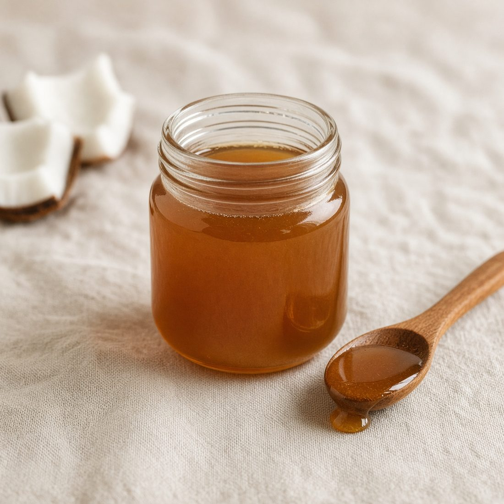
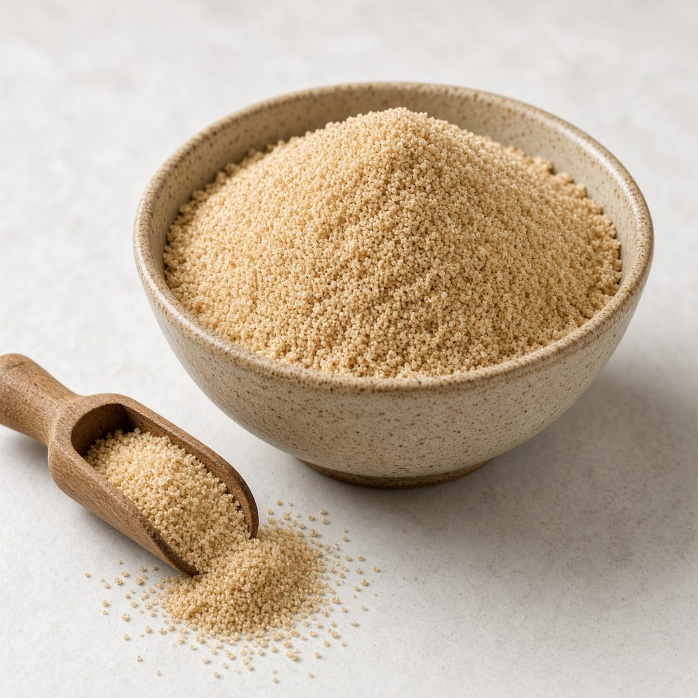
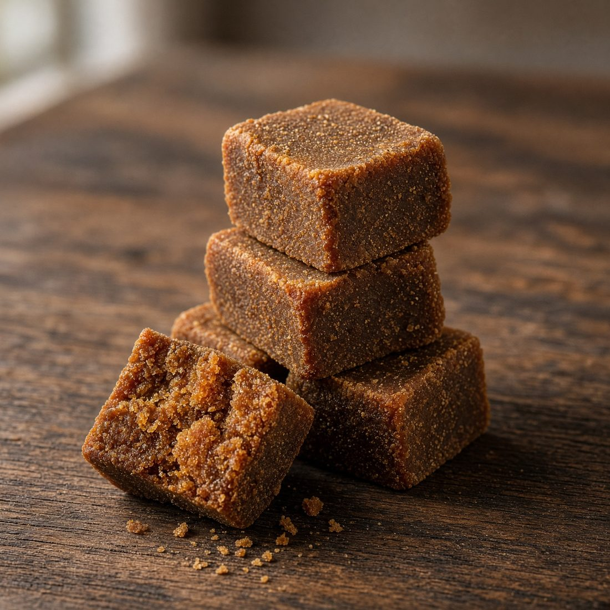
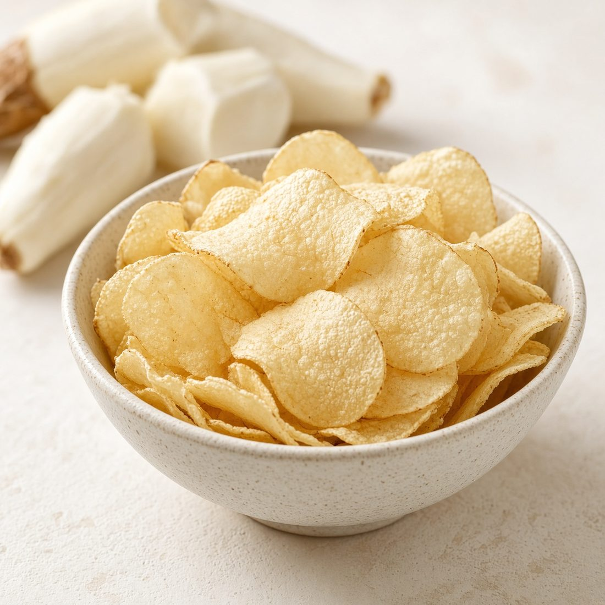
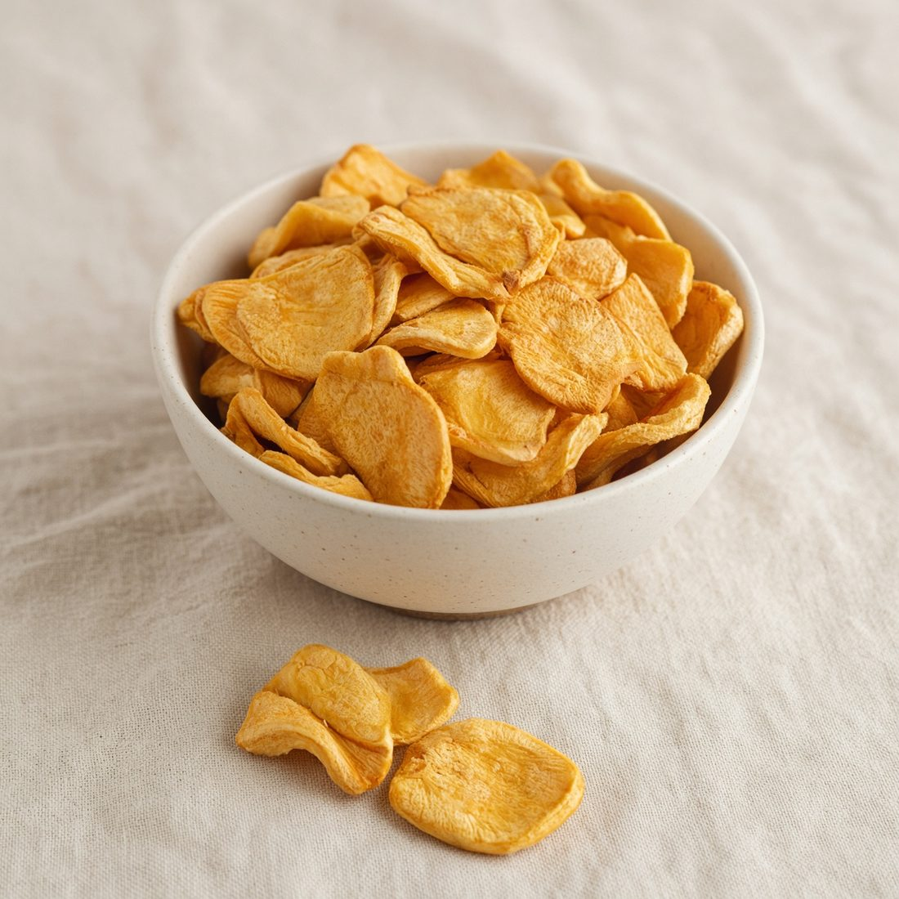

Rooted in Tradition
Rooted in Tradition
Premium coconut products, traditional sweeteners and authentic Kerala foods for international markets.

Premium coconut oil produced from quality coconuts, suitable for culinary, food-processing and other permitted applications. Available in specifications tailored to the buyer’s intended use and market.

Fresh tender coconuts selected for their refreshing coconut water and soft edible kernel. Suitable for fresh-fruit distributors, supermarkets, hospitality and food-service markets.

Traditional jaggery made from concentrated coconut sap, offering a naturally rich caramel-like flavour and characteristic dark golden to brown colour. Suitable for traditional foods, confectionery and sweet preparations.

A naturally derived syrup produced by collecting and concentrating coconut flower sap. It offers a distinctive caramel-like flavour and can be used as a sweetener, topping or food ingredient.

Coconut palm sugar is produced by concentrating coconut palm sap into a naturally flavoured sweetener. It can be supplied in convenient forms for both retail and food-processing applications.

Thinly sliced coconut pieces processed to provide a naturally crunchy texture and distinctive coconut flavour. Suitable as a snack or as an ingredient for cereals, bakery, confectionery and food products.

Finely processed dried coconut meat with controlled moisture, suitable for bakery, confectionery, desserts, food manufacturing and culinary applications. Different particle sizes can be supplied according to buyer specifications.

Traditional unrefined sweetener produced by concentrating sugarcane juice. It has a characteristic caramel-like taste and can be supplied for household consumption, traditional foods and food-processing applications.

Tamarind: A naturally acidic fruit widely used as a souring ingredient in cooking, sauces, chutneys, beverages and food processing. Available as whole pods, seeded/seedless pulp or pressed blocks.
Malabar Tamarind / Kudampuli: The dried rind of Garcinia gummi-gutta, traditionally used as a souring ingredient, particularly in Kerala-style cuisine and fish preparations.

Traditional Kerala-style snacks prepared for retail and international ethnic-food markets.


Traditional Kerala-style banana chips prepared from selected bananas and sliced into thin, crispy pieces. Available in salted, spiced and other customized variants.
Thinly sliced tapioca/cassava chips fried and seasoned to create a crunchy traditional snack. Suitable for ethnic-food stores, supermarkets and snack wholesalers.
Crispy chips made from selected jackfruit slices and processed to retain the characteristic flavour of jackfruit. Positioned as a traditional Kerala snack for retail and international ethnic-food markets.